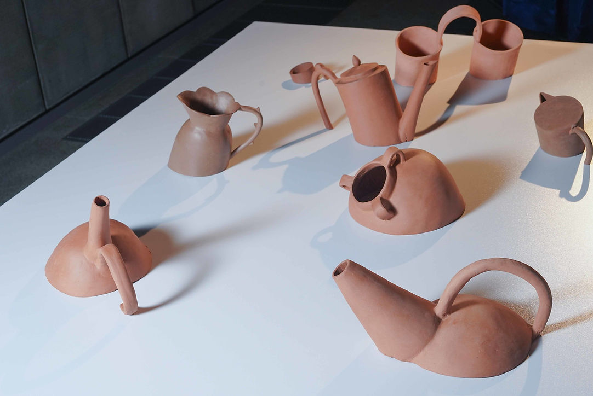
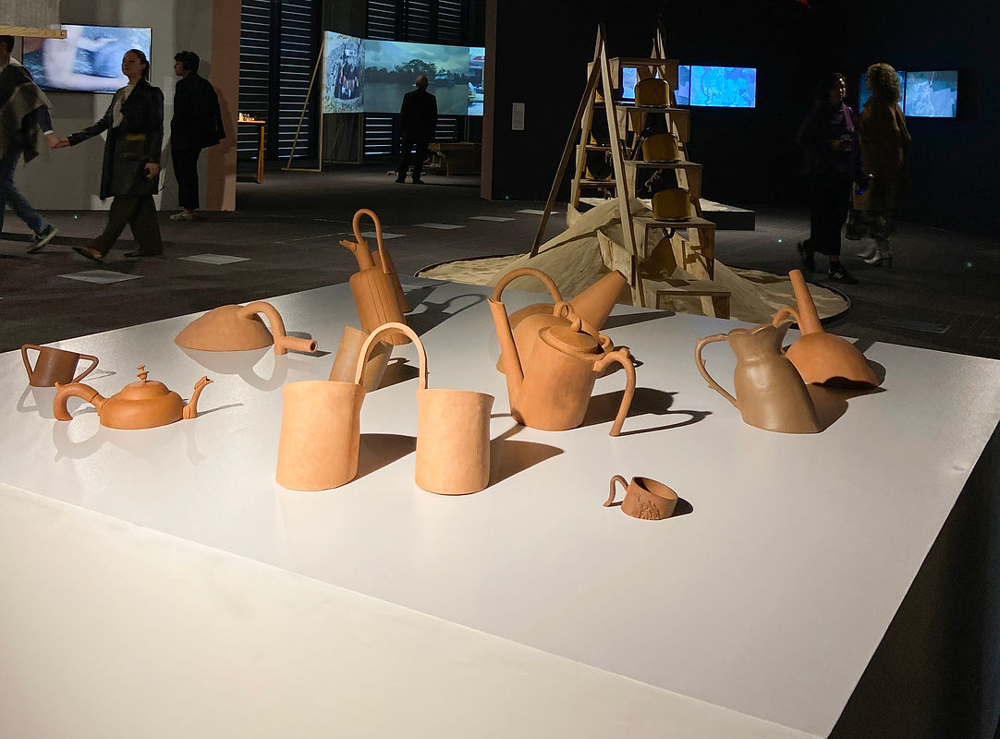

bache
25 - 30 de Septiembre del 2024
Ágora centro de convenciones - Bogotá.
Sección Artecámara - “Una moneda al aire”
Curaduría de Ximena Gama
“Bache” es un proyecto que propone explorar un acervo de vasijas de diferentes épocas y culturas. Las vasijas son, esencialmente, objetos con asas o manijas, creados para contener y transportar su contenido. Siguiendo esta lógica, si no tienen un fondo, ¿han dejado de ser vasijas?
“Bache” propone un escenario donde las piezas parecen hundirse o haber quedado petrificadas a través de unos cortes realizados transversalmente en diferentes puntos de cada una de las piezas. Busca generar una inconsistencia en la noción de completitud y estabilidad. El desnivel provocado y el material abren una pregunta por los discursos que enmarcan históricamente estos objetos, reuniendo en un mismo espacio una selección de vasijas de barro de culturas prehispánicas y jarras occidentales que abarcan los siglos XVII y XVIII, usualmente metálicas o de porcelana.
Las piezas estarán hechas de pasta de chamote impalpable de color rojizo, que se relaciona con la alfarería local. Este gesto también coloca al conjunto de objetos como entes que imitan cierta materialidad e historicidad.

Bache. Instalación. Cerámica, plataforma blanca. 190 x 190 cms. x 70 cms. 2024

Detalle.

Bache. Instalación. Cerámica, plataforma blanca. 190 x 190 cms. x 70 cms. 2024